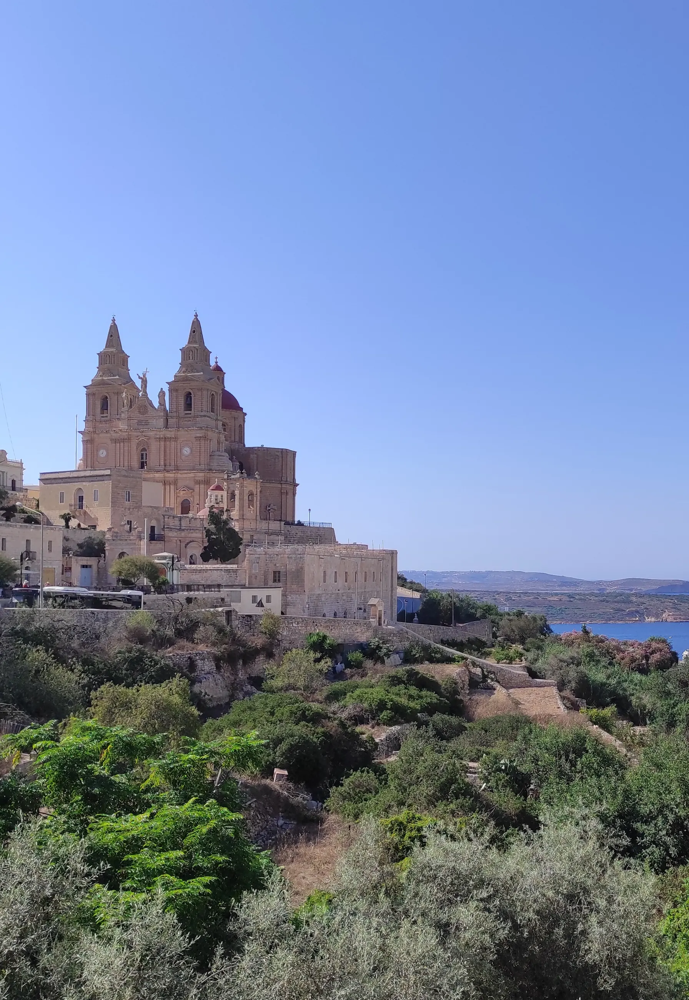

Walk from the exact entrance to the errands you expect to do on foot. A village-core label does not describe gradient or step-free access.
MELLIEĦA · NORTH MALTA
Hill, bay, wider north.
Mellieħa is a hillside village, a bay and a much wider northern locality. Start with the exact address: the parish core, Għadira and the road toward Marfa do not share one daily rhythm.

MELLIEĦA EDITIONREAD THE LOCALITY IN SEPARATE CONTEXTS
The village core is only one part of Mellieħa.
The Local Council lists the sanctuary and parish church alongside Għadira, the Red Tower, Manikata and other outlying landmarks. That range is useful context, but it does not make the whole locality one walkable district.
Ask whether an address serves the hilltop core, Mellieħa Bay and Għadira, or another part of the wider locality.
Marfa, Ċirkewwa, Aħrax and Manikata remain separate map checks. No straight line between them is a walking route.
Sanctuary and parish church.
The council documents a long church history at the site, while the Archdiocese records the shrine's religious significance and its recognition as a National Shrine in 2015. Current access and services should be checked directly; origin traditions are not presented here as independently established history.
Archdiocese shrine information ↗Nature reserve and Red Tower.
BirdLife describes Għadira as a protected brackish lake and saltmarsh. Din l-Art Ħelwa places the Red Tower on Marfa Ridge above the bay. They are distinct destinations outside a fictional village-centre walking circuit; check seasonal access with each operator.
Għadira Nature Reserve ↗ · Red Tower ↗DIRECT OPERATOR EXAMPLES
Everyday and dining anchors, without a ranking.
These examples help frame a viewing. They do not claim to be the closest, best or suitable for every address, and mutable menus, hours and promotions remain on the operators' sites.
Welbee's
The operator lists a Mellieħa supermarket. Check its current services and opening information directly.
Store locator ↗Square & Da Mello
Square Gastro Bar identifies its Parish Square setting, while Da Mello lists a central Triq il-Kbira address. They are sourced examples rather than a best-of list.
Square ↗ · Da Mello ↗one80 & Rebekah's
Both operators identify Mellieħa addresses and describe their own food offer. Use the exact address to judge whether either belongs in your ordinary radius.
one80 ↗ · Rebekah's ↗No single Mellieħa travel time.
Walking, scheduled buses, current driving traffic and ferry connections are separate datasets. This page gives no property-specific duration, inferred shortcut or locality-wide commute promise.
Open the hillside-core map only when you need it.
The first view is centred on the village and deliberately draws no council boundary, pedestrian circuit or line to the bay. It loads from OpenStreetMap only after your click.
Office of the Address Registrar · Mellieħa Local Council · Mellieħa history archive · Archdiocese of Malta · BirdLife Malta · Din l-Art Ħelwa · Welbee's · one80 · Rebekah's · Square · Da Mello
No ranking, fixed opening hours, property-specific route, accessibility promise, single walkable resort zone or locality-wide journey time is claimed.